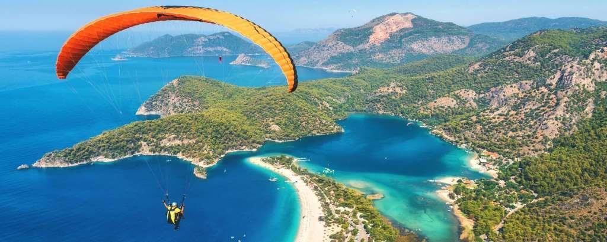

Самый западный курорт Анатолийского побережья с отличными пляжами, настоящая жемчужина среди которых — это голубая лагуна Олюдениз. Потрясающий вид на нее открывается с воздуха, во время полета на параплане. Плавное парение над бескрайним морем, горными вершинами и бухтой с бирюзовой водой всех возможных оттенков — станет эмоциональным пиком поездки в Фетхие. А самым неугомонным будет любопытно пройти вдоль берега пешком на юг полуострова и почувствовать себя первооткрывателем труднодоступных и оттого пустынных пляжей.
Ликийские гробницы. Древние ликийцы верили, что в загробную жизнь их переносят божественные крылатые существа. Поэтому, чтобы облегчить им задачу, они помещали тела самых уважаемых и почитаемых людей ликийского общества в высокие сооружения: например, в скалы. Крупнейшее захоронение таких гробниц располагается в некрополе, в Городе Мира что в Демре. Самые старые гробницы обычно представляют собой ямы, вырезанные прямо в скале. Начиная с IV века, многие гробницы начинают приобретать очертания древнеримского влияния, с колоннами и сложным рельефом, хоть и потускневшие по истечении столетий.
Пляж Олюдениз. Олюдениз — это самый популярный турецкий курорт, известный каждому любителю этой страны. Здесь находится всемирно известная Голубая лагуна и пляж Олюдениз. Это также одно из самых популярных мест для кайтинга и парапланеризма. Пляж Олюдениз — это вообще один из самых фотографируемых пляжей в мире. Золотистые песчаные холмы на фоне чистого бирюзового моря делают это место мечтой фотографа. Неудивительно,что с самого начала курортного сезона здесь всегда собирается много людей: турецкий сервис всегда на высоком уровне, а инфраструктура пляжа это что-то с чем-то.
Ущелье Саклыкент Саклыкентский каньон, известный на весь мир, является самым длинным и глубоким ущельем Турции и вторым по величине ущельем Европы. Его длина составляет 18 километров, а высота, на разных участках, до 1000 метров. На протяжении всего этого чуда природы здесь попадаются крутые скалистые объекты, водопады и около шестнадцати пещер. Здесь можно найти настоящие леса красной сосны, также по территории ущелья протекает речка. Скалы Саклыкента столь высоки, что практически не пропускают солнечного света внутрь ущелья.